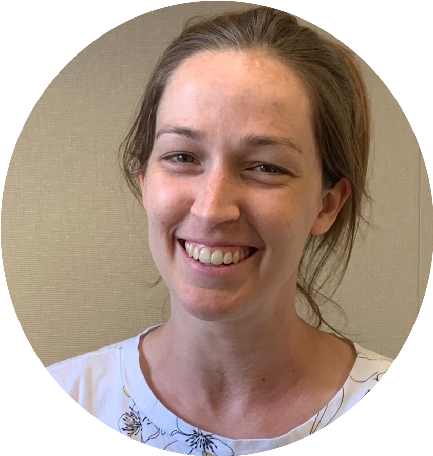

Meredith Cenzer
Principal Investigator
mlcenzer@uchicago.edu
Local adaptation, plant-insect interactions, plasticity, behavioral ecology.
I study how insects respond to human-induced rapid environmental change.
Anastasia Bernat
Research Technician
avbernat@uchicago.edu
Flight mill engineering, flight dispersal, climate change.
I’m interested in how ecological systems respond to climate change and habitat fragmentation.
Ana Silberg
Research Assistant
alsilberg@uchicago.edu
Neuroscience, insect behavior, sensory systems.
I'm interested in researching soapberry bug behavior informed by their sensory systems.
09/01/2020: Meredith Cenzer was appointed to head the newly-formed Diversity Committee of the Ecology and Evolution Department.
Last updated 10/27/2020
All lab members must take COVID-19 and lab safety training and have administrative approval within the Department of Ecology and Evolution before entering the lab. All lab personnel must take their temperature before entering the university buildings and ensure that they are not showing any ill symptoms. If symptoms are showing, then lab members must stay home.
When working in the lab, all lab personnel must follow CDC guidelines, including wearing a mask at all times and standing 6 feet apart from other lab personnel. In addition, lab memebers cannot face each other from the opposite-end of their lab benches. Futhermore, all surfaces touched must be disinfected after use at the end of a work-shift.
For more information, please visit the guidelines offered by the University of Chicago and the CDC.
09/03/2019: Anastasia Bernat, a UChicago alumn, joined the Cenzer Lab as a Research Technician.
06/15/2019: Ana Silberg, an undergrad at the University of Chicago, joined the Cenzer Lab as a Research Assistant.
04/18/2019: Meredith Cenzer joined the University of Chicago as a Pathways to Independence Instructor of Ecology and Evolution.
Academia and our institutions were created as part of a society built on systemic racism, sexism, and classism; their structure and culture continue to perpetuate and exacerbate disparities in privilege. We acknowledge that gender, racial, and economic disparities in higher education continue to reflect broader societal patterns and cultural beliefs. As researchers and scholars, we hold the responsibility to practice anti-racism and be transparent in real or potential conflicts of interest from our community and colleagues. That is why we support the Black Lives Matter movement and stand in solidarity with immigrants and international members of our community.